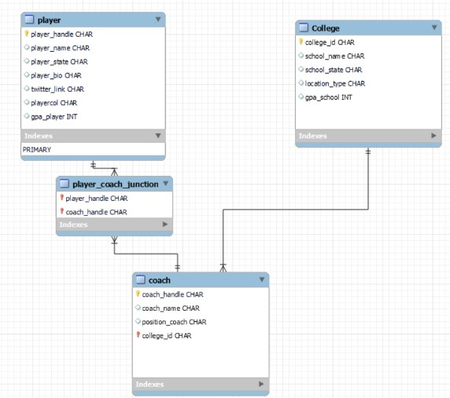

Using Python and SQL For College Football Recruiting
Built database of rival recruiting rosters and Scraped 400 qualified national recruits for our recruiting board in 2023.
Before We Start
As players we are always told “Football is the front porch of the university”. Football may only a small fraction of a University, but it is the first thing people see. Schools invest lots into college football and athletics because of the impact success can have on a university. Success in college football comes down to recruiting, good recruits eventually lead to better players, which lead to better teams and more success. Nick Saban, one of the most winniest coaches in college football won 6 national championships because of his ability to recruit well. During the time of his dynasty at the University of Alabama enrollment grew 60% and brought in millions of more dollars for the local economy. It is estimated the Nick Saban brought over a billion dollars of networth to the University of Alabama and that was done on the back bone of always having one of the best recriuting classes in the country. College athletics recruiting has more impact then people realize however for example, there are over a million high school football players in the country. Finding the right 17-18 year old kids and convincing them to come play at your university is the most time consuming part of college athletics. Top funded schools spend millions of dollars a year on recruiting because of the impact to a team and university.
At smaller universities athletes might make up 2/3 of enrollment. The athletic departments ability to recruit and have a large roster has a direct impact on the over all enrollment of the university. Hower recruiting for a small university presents even more challenges to this difficult task.
Higher/Specific Academic Requirements
Necessity of Large Recruiting Classes
Limited amount of staff
Limited finances to travel and recruit in-person
Why Is Twitter The Answer?
College Football Coaches follow the prospects they are recruiting. Every recruit has a twitter account set up with some kind of information advertising they are a recruit.
<img src=“/twitter1.jpg”)
\(\color{red}{\text{Class}}\) - This tells coaches the graduation class of a prospect. Nearly ever recruits has this in their bio. This program looks for recruiting class to classify an account as a recruit.
\(\color{green}{\text{Position}}\) - This tells a coach the recruits position. Coaches do not always need this information scrapped but it is nice to have at times.
\(\color{yellow}{\text{Height and Weight}}\) - Does not typically determine if a division 3 schools will recruit a prospect. For that reason our staff did not often ask for this information scrapped.
\(\color{cyan}{\text{GPA}}\) - This is the most important information for division 3 recruiting. Each school has a very specific GPA minimum to recruit an athlete. Being able to filter with a minimum GPA saves our coaches LOTS of time.
\(\color{Magenta}{\text{Location}}\)- Coaching staffs separate recruits by state, this is valuable information to sort by. As well we can tell information about a schools recruiting strategy or divide up recruits we find.
\(\color{Orange}{\text{Link}}\)- A link is almost always their highlight tape. Having a recruits information with their highlight tape in one place saves coaches LOTS of time not having to search for it
Most recruits’ account do not have all of this information. But categorizing accounts as ’24 recruits and scraping any available information saves valuable time and allows recruits to be sorted for a variety of reasons
This project finds recruits by running a scraping program through lists of twitter accounts that we know have recruits in them. There are two methods of finding these lists of twitter accounts. Each method has its own time, place and application in the recruiting process. But first we need to do some set up.
This will be using “Tweepy” twitters API.
from textblob import TextBlob
import re
import tweepy
consumer_key=#####################
consumer_secret=######################
access_token=##########################
access_token_secret=##############################
bearer_token = ########################
import matplotlib.pyplot as plt
import numpy as np
auth= tweepy.OAuthHandler(consumer_key,consumer_secret)
print(auth)
#api= tweepy.API(auth,wait_on_rate_limit=True, wait_on_rate_limit_notify=True)
api = tweepy.API( auth, wait_on_rate_limit= True)
import math
import csv
import ssl
import requests
import json
import base64
import urllib.parseFirst we will define a function to find the text that indicates state the player is from.
#this function takes a group of text and looks for the state and will be used a few times
def get_state(location_str):
location_str = ' '+location_str.lower()+' '
location_str.replace(',', ' ')
state = ''
states = {
"alabama": "AL",
"alaska": "AK",
"arizona": "AZ",
"arkansas": "AR",
"california": "CA",
"colorado": "CO",
"connecticut": "CT",
"delaware": "DE",
"florida": "FL",
"georgia": "GA",
"hawaii": "HI",
"idaho": "ID",
"illinois": "IL",
"indiana": "IN",
"iowa": "IA",
"kansas": "KS",
"kentucky": "KY",
"louisiana": "LA",
"maine": "ME",
"maryland": "MD",
"massachusetts": "MA",
"michigan": "MI",
"minnesota": "MN",
"mississippi": "MS",
"missouri": "MO",
"montana": "MT",
"nebraska": "NE",
"nevada": "NV",
"new Hampshire": "NH",
"new Jersey": "NJ",
"new Mexico": "NM",
"new York": "NY",
"north Carolina": "NC",
"north Dakota": "ND",
"ohio": "OH",
"oklahoma": "OK",
"oregon": "OR",
"pennsylvania": "PA",
"rhode Island": "RI",
"south Carolina": "SC",
"south Dakota": "SD",
"tennessee": "TN",
"texas": "TX",
"utah": "UT",
"vermont": "VT",
"virginia": "VA",
"washington": "WA",
"west Virginia": "WV",
"wisconsin": "WI",
"wyoming": "WY",
"district of Columbia": "DC"}
state_names = list(states.keys())
#list of state names
state_abv = list(states.values())
#list of state abv
state_abv_str = '\sal\s|\sak\s|\saz\s|\sar\s|\sca\s|\sco\s|\sct\s|\sde\s|\sfl\s|\sga\s|\shi\s|\sid\s|\sil\s|\sin\s|\sia\s|\sks\s|\sky\s|\sla\s|\sme\s|\smd\s|\sma\s|\smi\s|\smn\s|\sms\s|\smo\s|\smt\s|\sne\s|\snv\s|\snh\s|\snj\s|\snm\s|\sny\s|\snc\s|\snd\s|\soh\s|\sok\s|\sor\s|\spa\s|\sri\s|\ssc\s|\ssd\s|\stn\s|\stx\s|\sut\s|\svt\s|\sva\s|\swa\s|\swv\s|\swi\s|\swy\s|\sdc\s'
#string of re.finall form to look for abreviations
state_name_str = '|'.join(state_names)
#this joins the list of state names by | this gives us a string to look for state names
state_name_str.lower()
#make all lowercase for simplicity
state_search = re.findall(state_abv_str,location_str)
#check the location string from twitter
if len(state_search)==0:
#if no state abreviation was found in location try state name
state_search = re.findall(state_name_str,location_str)
if len(state_search)>0:
#if state or state abv was found set that equal to state of recruit
state = states[state_search[0]]
else:
state = state_search[0]
state=state.upper().replace(' ','')
#if nothing was found set state as empty string
return(state)
#returning what was found for state
This function will look for listed GPA
#This function is made to find gpa value from a group of text
def get_gpa(text):
gpa_value_return= ''
#text is a bio or tweet to sort through
#look for a recruit to list gpa
gpa_ask= re.findall('gpa',text)
#look for the a #.## or #.# in text
gpa_value= re.findall("\sd\.\d\d|\s\d\.\d",text)
if gpa_value != []:
# min value is used because sometimes 40 time is in bio and has #.## form
# 40 time is typically above 4.4 which means in the case of 2 values are found gpa will be lower
gpa_value= min(gpa_value)
gpa_value_return= float(gpa_value)
return(gpa_value_return)Method 1: Coaches Following
Coaches typically try to hide who they are recruiting. However, on twitter they follow and engage with every player they are recruiting. Essentially there is a public list of their entire recruiting roster, but it would be a huge time waste to manually dig through 4.6k accounts to find maybe 400 names. This program does just that. It may not find every single recruit, but it will get a majority in a time efficient manor.
The players are distinguished as a recruiting by finding their graduation class. If their graduation class matched what we are looking for the rest of their information is scrapped and listed in a data set with a column `coach_handle` to signify the coach that was following(recruiting) them.
# this function takes a coaches handle goes through all followers
#the function filters to grab accounts that mention they graduate in a certain year (this signifies an account is a recruit)
def get_players(coach_handle):
following_list = api.get_friend_ids(screen_name = coach_handle)
#get list of following
len_following = len(following_list)
total_player_list= []
counter = 0
player_data_list = []
#CHANGE THIS NUMBER TO SELECT HOW MANY FOLLOWERS TO GO THRU
for id_current in following_list[0:len_following]:
counter = counter +1
player_data_list= []
#this is the data for the twitter id currently being checked
print(counter)
#it is nice to gauge where the program is at
user_data = api.get_user(user_id = id_current)
#this grabs the data for the user being checked
bio =''
bio = user_data.description
bio = ' '+bio+' '
bio_text_list = re.findall('[a-z]|\s|\.|[A-Z]|\/|[0-9]|\-|\(|\)', bio)
#this grabs just numbers ad letters from bio (avoiding emojis and symbols)
bio= ''.join(bio_text_list)
#add filter
text = bio.lower()
text= re.sub("\'"," ",text)
text = re.sub("\'"," ",text)
text = re.sub("\'"," ",text)
text = re.sub("\|"," ",text)
#these replace symbols with spaces to simplify the next line
grad_search= re.findall("\'24|\s24\s|co24|c/o\s24|2024|/24", text)
#this searches for all of the ways recruits list the year of recruiting class
if len(grad_search) >0:
#if grad_search is not empty that means the account being checked is a recruit in the class we are looking for
gpa = get_gpa(text)
#look for gpa
if gpa == '':
gpa = np.NaN
#if gpa is empty that means player does not list gpa
player_state = get_state(bio)
#typically a recruit lists their state, this function searches for it
location = ''
if player_state =='':
#if the player does not list state in bio check location.
#(location is sometimes incorrect that is why it is checked second)
location = user_data.location
if location !='':
player_state = get_state(location)
#set variables empty
player_handle = ''
player_name = ''
player_location_full = ''
#fill variables
player_handle = user_data.screen_name
player_name = user_data.name
player_location_full = location
#this allows dirrect link to the account
twitter_link='https://twitter.com/'+str(player_handle)
player_data_list= [player_handle, player_name, player_state, bio, player_location_full, gpa, twitter_link, coach_handle]
#create list of player information
total_player_list.append(player_data_list)
#this is a list of lists, each index is a recruits information
new_data=pd.DataFrame(total_player_list, columns = ['player_handle', 'player_name', 'player_state', 'bio', 'player_location_full', 'gpa', 'twitter_link', 'coach_handle'])
return(new_data)
#this returns a data set of players with their info and the coach that is following(recruiting) themThe data set is then cleaned some more and imported into this SQL database to be able to sort and analyze for various applications and exports.

The data base of recruits is scrapped from coaches at colleges in our conference and state. There are additionally some schools/coaches scraped that we often recruit against nationally due to similar recruiting strategies.
Application Examples from SQL database
select *
from player
where player_handle not in (select player_handle
from junction_table
where coach_handle = 'OUR_CA_RECRUITING_COACH')
and player_state = 'CA';This all of the recruits from CA that our rival schools are recruiting that we are currently NOT recruiting. This signifies these players are good enough for our conference and our recruiting coach can quickly evaluate film and make contact all from one spreadsheet.
select *
from junction_table
where player_handle in (select player_handle
from junction_table
where coach_handle = 'OUR_COACH_HANDLE')
and coach_handle != 'OUR_COACH_HANDLE'
group by player_handle;This tells a coach what other schools are recuriting his/her recruits
select *
from player where player_state = "OH";Filter by a state we do not typically recruit.
Ex. A rival school’s Head Coach is from Ohio so they recruit that state heavily. He has lots of connections and has a good understanding of who and where to recruit in the state. We do not. We can filter for his schools recruits from Ohio. We take the list of recruits he spent time finding and evaluating and assign it to one of our coaches. This allows us to recruit a new state without any connections or spending any resources.
Method 2: Scraping through other school’s posts.
Lots of smaller schools put up posts like. If a prospect comments to a post like this we can assume two things.
1. The prospect is uncommitted, that is why he is responding to a post.
2. The prospect ranks his talent to the level of football of the post. If the post is Not D1 the prospects understands he is not a D1 player.
This is especially helpful at the end of the recruiting process when a majority of recruits in a class are committed. There are not a lot of players still available. There are a lot of comments on these posts, but it takes a long time to filter through to find the players in the right class and GPA, so first we need to make a function for recruits we are looking for.
#this takes a group of text a twitter bio or the text from a tweet reply and checks for
#1 is this a recruit, 2 do they meet the GPA we are looking for
def check_hamline(text):
#text is a bio or tweet to sort through
grad_check = ''
gpa_value_return =''
text = text.lower()
#make it simple, lowercase
grad_check= re.findall('\'23|of\s23|transfer|senior|co\s23|c/o\s23|2023|\s23\23', text)
#check for is this a class of '23(change to 24 for this year)
# "Senior" suggests senior in highschool therefore going to graduate, then transfer mean they are a transfer student and therefore an eligble recruit
gpa_ask= re.findall('gpa',text)
#check for the if GPA is mentioned (no one will post their GPAthout saying "gpa")
if grad_check != []:
#if grad check is not empty this means the recruit has a phrase mentioned above that signify they are a recruit for the year we want
if gpa_ask != []:
gpa_value= re.findall('\d\.\d\d|\d\.\d',text)
#this checks for the 2 ways to list gpa could be listed #.## or #.#
if gpa_value != []:
gpa_value= min(gpa_value)
#min is used because the forty yard dash is in #.## form. the Forty is always above a 4.3
#if there are two #.## found. Taking the minimum will give us the gpa value because it is usually less than 4.3
gpa_value= float(gpa_value)
#turn string digit into number
#GPA CUT OFF TO CHANGE
if gpa_value>= 3.4:
#the gpa cut off example here is 3.4
gpa_value_return=gpa_value
#if greater than cut off put value into return
#if less than the return will remain empty
return(gpa_value_return)Next we need to make a function that gets the information for each recruit to be able to use check_hamline
#this takes a user that replied to a tweet, and the reply itself
def get_user1(user_data, reply):
Screen_name = ''
name = ''
url_link= ''
location = ''
bio = ''
# get the data of user
screen_name= user_data.screen_name
name = user_data.name
#user name
entities_dict= (user_data.entities)
bio = user_data.description
gpa = check_hamline(bio)
#remember check_hamline returns a GPA if it is above our threshold
#returns an empty string if GPA is not high enough OR account is not found to be a
if gpa == '':
#sometimes the bio does not have information confirming a recruit or the gpa
#often the text in the reply itself has that information so we check there as well
gpa = check_hamline(reply.text)
if gpa != '':
#if gpa was found and met requirements we can not scrape for data
if 'url' in (entities_dict.keys()):
#if url is listen on the account
test_1= entities_dict['url']
list1= test_1['urls']
dict_2=list1[0]
url_link= dict_2['url']
#set url link to the url
location = user_data.location
#get location
twitter_link='https://twitter.com/'+str(screen_name)
#create link for twitter
user_list=[name, screen_name, bio, gpa, twitter_link ,location, url_link]
#column order 'name','handle','bio','gpa_from_bio','twitter_link','location','url_links'
return(user_list)
#this returns list of the ONE user we check if found to be an eligble recruitNow we have our scrapping functions we can run code to iterate through each reply.
#this code is how we first scrape the replies from a tweet
name = #handle of account that posted tweet (string)
tweet_id = #id number of tweet found in url (string)
replies=[]
#the below code goes through each reply to the tweet and appends it to the replies list
for tweet in tweepy.Cursor(api.search_tweets,q='to:'+name, result_type='recent', timeout=999999).items(1000):
if hasattr(tweet, 'in_reply_to_status_id_str'):
if (tweet.in_reply_to_status_id_str==tweet_id):
replies.append(tweet)Next we will run through each reply to create our data base of eligible recruits.
all_data=[]
none_list=[]
#replies is a list of replies from the chunk above
#this code goes through the replies to check and scrape with the functions above
for reply in replies:
user1= reply.user
#get user name from reply
user1_list= get_user1(user1,reply)
#returns list of user info IF account is found to be recruit
if user1_list != None:
#if there is a list returned append the reply to the end of the list
user1_list.append(reply.text)
#add our individual user list to the list of all data
all_data.append(user1_list)
new_data=pd.DataFrame(all_data, columns = ['name','handle','bio','gpa_from_bio','twitter_link' , 'location','url_links', 'reply_to_tweet'])
#create data framThis Example spreadsheet was a post from a high academic, small private school similar to us. An assumption can be made these recruits are interested in our type of school. The only filters necessary is our organizations GPA minimum and the recruit was in the 2023 recruiting class.
The feature scrapped url_link is so our coaches can immediately evaluate the film. location, bio and reply_to_tweet provides quick information as context about film and the recruit. If interested, the coach evaluating can immediately contact them with a direct twitter_link to the account. This allows a coach to evaluate a player and contact him in under 5 minutes.
Impact
This project was used for our football program’s 2023 recruiting class. With it we added 400 recruits to our recruiting board in April when most schools had already finalized their 2023 class. We were able to add some quality players to our roster and devleop connections with high schools we previously did not have. This provided life changing college opportunities for players who deserved it, but for whatever reason was struggling to be found by coaches.
Potential Impact
These programs were very beneficial for our football program, however it could be utilized for all sports. For schools who want large roster sizes this is the mos efficient way to mass recruit. Entire athletic departments could utilize these methods. They are not a replacement for tpically recruiting work, however they can easily provide a much larger pool of recruits with very little effort. College athletics recruiting is an important part of a university big or small and this project has been proven to improve recruiting performance of all athletics.